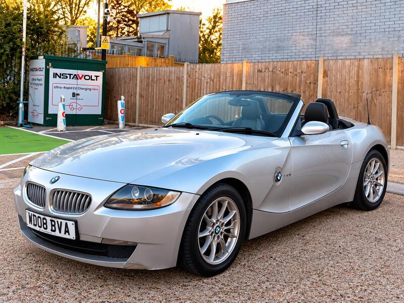
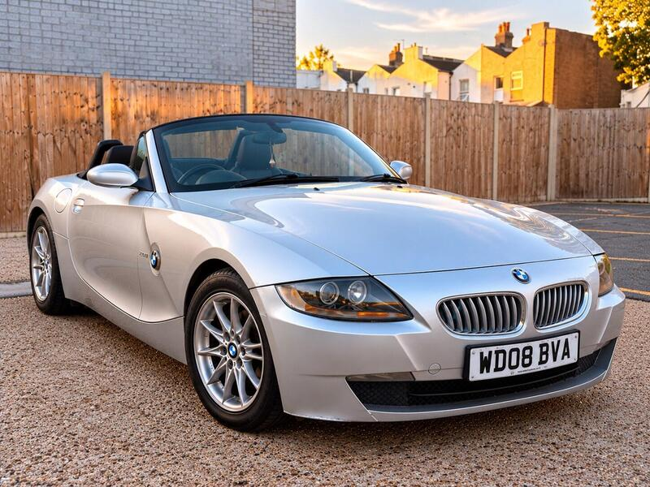
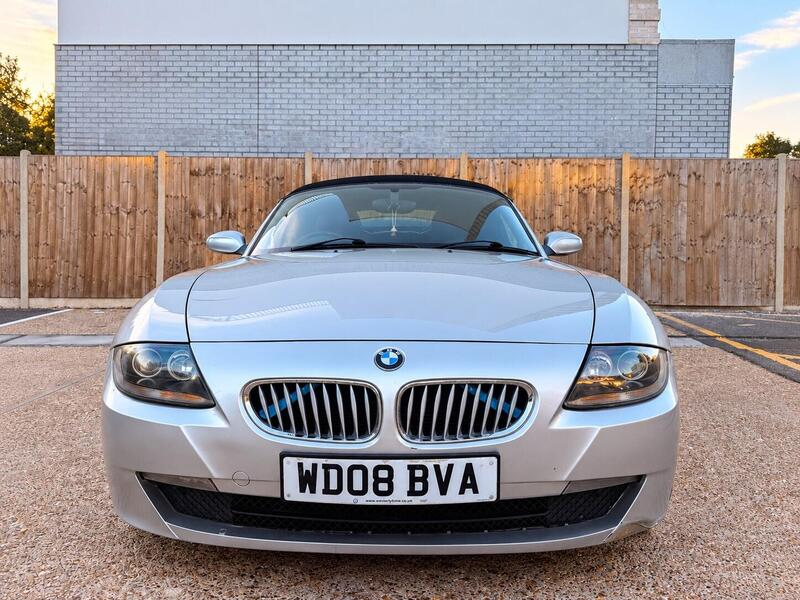
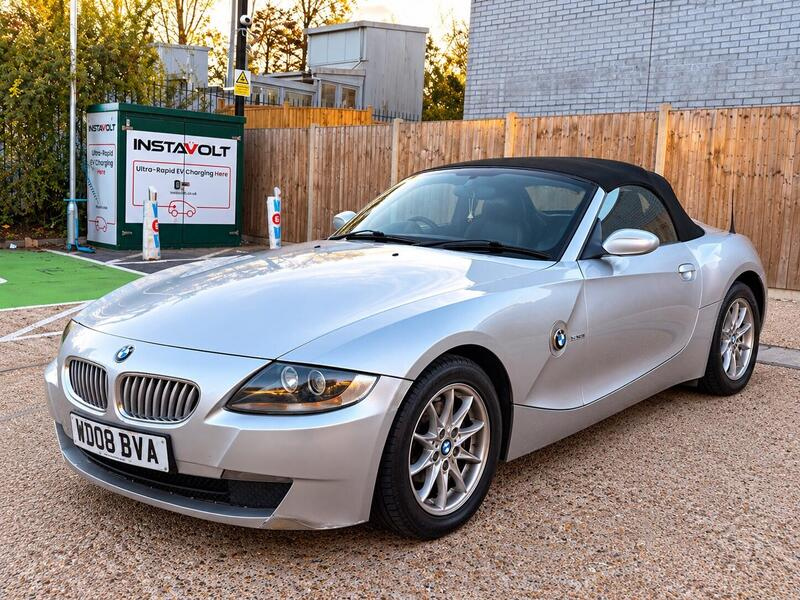

Seller photos from the AutoTrader ad.
BMW Z4 2.0i SE
The cheapest sound Z4: rear-wheel drive for £1,850.
Key facts
| Price | £1,850 |
|---|---|
| Year | 2008 |
| Miles | 108,000 |
| Model | BMW Z4 2.0i SE |
| Colour | Silver |
| Registration | 2008 (08 reg) |
| Owners | 7 owners |
| Service history | Not stated |
| MOT (AutoTrader ad) | 8 Jul 2027 (ad) |
| Seller | Private |
| Location | Eltham |
| From GU7 | 35 mi (AutoTrader) |
| Checked | 15 October 2026 |
Why buy it
- Manual 2.0, long MOT, new battery (ad)
Things to check
Aftermarket steering wheel
Check the rear brake lines and roof drains
- BMW Z4 E85 weak spots
Body resists rot well; rear brake lines corrode; occasional rear-arch blisters. Roof motor flooded by a blocked drain (dealer ~€1,200–1,500, specialist €200–400); cooling plastics (expansion tank, thermostat, water pump).
Seller says (extract)
“2008 BMW Z4 2.0i Roadster - Manual - 108k - Apple CarPlay - Harman Kardon - Long MOT Very nice BMW Z4 2.0 petrol manual Roadster for sale. Drives very well and looks great with the roof up or down. 108,000 miles with MOT until 8 July 2027. Comes with Apple CarPlay, Harman Kardon sound system, 2 keys and a brand-new battery. The car has a sporty interior with bucket-style seats and aftermarket steering wheel, giving it a distinctive look. Engine runs well, gearbox changes smoothly and the car drives nicely. 2.0 Petrol | Manual | 108k miles | Apple CarPlay | Harman Kardon | 2 Keys | New Battery | Long MOT Located in New Eltham, London. Viewings and test drives welcome.…”